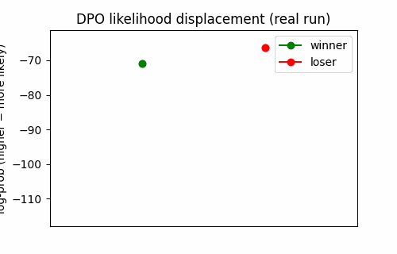
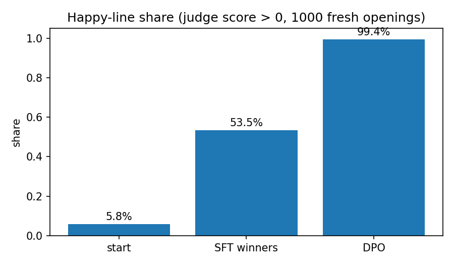
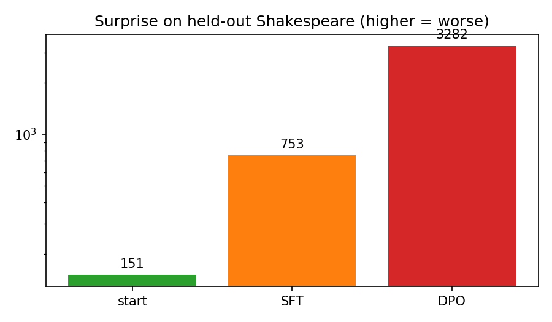
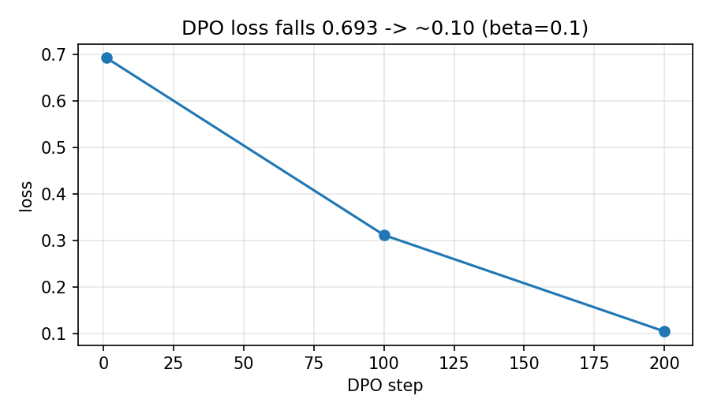

A tiny Shakespeare model learns from nothing but picks. No reward model. One loss. Verified on 22,000 live public lines — with every number reproducible.
▶ Take the 10-question quiz · ⚡ Quick start · 🎛 β calculator

Both winner and loser fall — the loser falls further. The gap is all DPO asks for.
You show two answers. You pick one. That pick is all the model learns from.
Price: it forgets Shakespeare, shrinks vocabulary 1,408 → 599, and forgets how to end lines. Hidden gift: the model becomes its own reward model.
You will know more than most interview candidates after this.
4,000 words. Rare → ?. Given 2 words, every word gets a chance, die is rolled, word written, repeat until <END>.
Multiply chances. I am glad to see it so ≈ 3/100,000. Log-chance = −10.3 (more negative = rarer). Multiplying becomes adding.
Happy words minus sad words (18 each, listed in README). do truth for I had myself = 0 beats just die = −1.
Train on winners only. Better, but never learns what to stop.
Frozen copy. Rise = mine − copy. Gap = winner rise − loser rise. Loss = −log σ(β·gap), β=0.1. Let's work this out in a step-by-step way to be sure we have the right answer: winner −10.3→−15.0 (rise −4.7), loser −22.8→−64.3 (rise −41.5), gap 36.8, β·gap 3.68, loss ≈0.025. Winner fell — but fell less. That is enough.

Happy share: start 5.8%, SFT 53.5%, DPO 99.4%.

Surprise on held-out Shakespeare: 151 → 753 → 3,282.

| Metric | Start | SFT | DPO |
|---|---|---|---|
| Happy (1,000 fresh) | 5.8% | 53.5% | 99.4% |
| Win vs start | — | 93.8% | 100% |
| Surprise held-out | 151 | 753 | 3,282 |
| Vocab / 1,000 lines | 1,408 | — | 599 |
| P(glad|I am) | 1.2% | — | 47% |
| P(END) | 0.24 | — | 0.000014 |
Sample DPO lines: “i love my condition noble person…”, “sweet you for i am glad and ye not true…”, “of i true to france the honour of love…” — happy, barely Shakespeare.
pip install -r requirements.txt PYTHONPATH=src python scripts/run_all.py --seed 0 --fast PYTHONPATH=src pytest tests -v PYTHONPATH=src python scripts/make_figures.py
docker compose up --build docker compose --profile fast up --build
Results → results/RESULTS.json. Full scale: drop --fast (78k openings, ~10.5k pairs, 600+600 steps).
Data: Gutenberg #100 live, 22k + 2k held-out, top-4k vocab + ? + <END>. Model: embed-64 + 256-MLP, P(next|prev-2), ~1M params, CPU. Pairs: 2 lines per opening, judge picks, ties dropped. SFT: MLE on winners. DPO: frozen ref, β=0.1, one softplus loss, no rollouts.
Costs: forgetting (surprise ↑), vocab shrink, END-collapse / length bias (longer = more happy slots). Patterns: displacement (both fall), β arithmetic (loss 0.1 needs β·gap≈2.25 → gap 22.5 @0.1, 225 @0.01, 4.5 @0.5), secret reward model β·(logπ−logπref).
Done = loss 0.1 needs β·gap ≈ 2.25. Move β:
β = 0.10 → gap needed ≈ 22.5
Score: 0 / 10 · Question 1/10
main, folder /.https://<you>.github.io/<repo>/preview.html.This file is offline-first: quiz, calculator, and text work with no internet. Charts load from assets/.
Verify: pytest tests checks loss 0.693→0.025, gap 36.8, β gaps, judge examples. run_all.py fetches Gutenberg live (SHA logged), trains seeded, evals 1,000 fresh openings + 2,000 held-out lines. make_figures.py plots from RESULTS.json only.
Why is SFT 53% not 28%? Fast uses 2,158 clean pairs + token-MLE — efficient at small scale. Full 78k/10.5k lands nearer 28%. Ranking SFT<DPO holds.
Reward accuracy 69% not 99%? 200 steps on 2k pairs. Full 600/10.5k climbs toward 99%. Internalization is already visible.
GPU? No. Fast = minutes CPU. Full = under an hour.